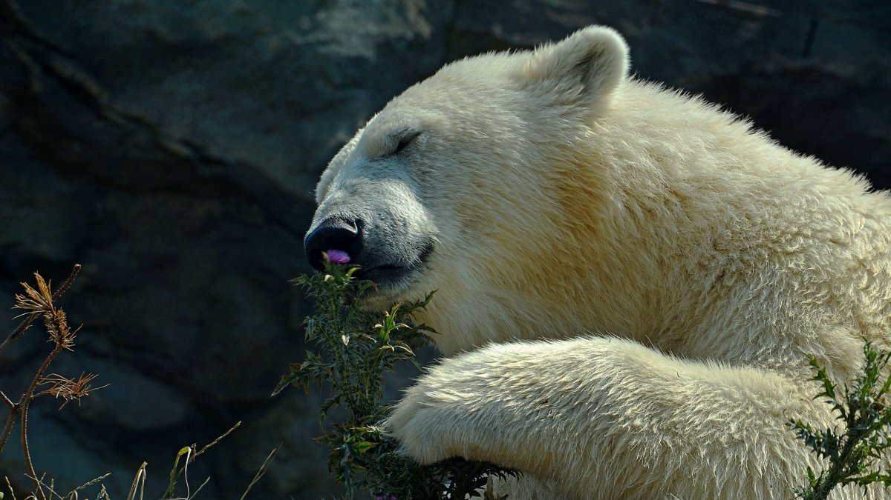

<!DOCTYPE html>
<html lang="en">

<head>
    <meta charset="UTF-8" />
    <meta name="viewport" content="width=device-width, initial-scale=1.0" />
    <link rel="stylesheet" href="./styles/styles.css">
    <title>Ferrari</title>
</head>

<body>
    <main>
        <!-- <article class="article">
            <h2 class="article-heading">Ferrari1</h2>
            <p class="article-text">В июне 1969 года 50 % акций Ferrari было куплено концерном Fiat; Энцо Феррари
                сохранил за собой остальные
                50 %, а также
                контроль над гоночным подразделением. Инвестиции Fiat позволили увеличть производство до более, чем 1000
                автомобилей в
                1970 году и 2000 в конце 1970-х годов. В 1988 году, после смерти основателя, Fiat увеличил свою долю до
                90 %[4].
                Последняя модель, над которой работал Энцо Феррари, была F40.</p>
            <a href="page/ferrari.html" class="link">car</a>
        </article>
        <article class="article">
            <h2 class="article-heading">Ferrari2</h2>
            <p class="article-text">В июне 1969 года 50 % акций Ferrari было куплено концерном Fiat; Энцо Феррари
                сохранил за собой остальные
                50 %, а также
                контроль над гоночным подразделением. Инвестиции Fiat позволили увеличть производство до более, чем 1000
                автомобилей в
                1970 году и 2000 в конце 1970-х годов. В 1988 году, после смерти основателя, Fiat увеличил свою долю до
                90 %[4].
                Последняя модель, над которой работал Энцо Феррари, была F40.</p>
            <a href="page/Ferrari 308.html" class="link">car</a>
        </article> -->
        <!-- 
        <div class="smoker-img"></div> -->

        <div class="outer">

        </div>
    </main>

    <footer>
        <p>All rights reserved 2022.</p>
    </footer>
</body>

</html>